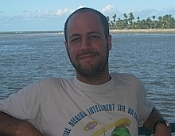

A few words about me
{kind=link}
I am a research scientist at the Florida Space Institute and an associate in the physics department's planetary sciecne group , all part of the University of Central Florida .
I work on topics involving thermal and collisional evolution of planetary bodies (comets, asteroids and terrestrial planets) and early compositional evolution in the solar system. Most of my research focuses on relating thermo-physical, chemical and dynamical properties of various small body populations to their origin conditions and evolution pathways. The ultimate goal is to understand how planetary systems arrange themselves and promote habitable conditions.
Before
I spent some time as a postdoctoral fellow, affiliated with the Institute for Astronomy and the NASA Astrobiology Institute, at the University of Hawai'i.
As a collaborating researcher with the University of Hawaii's astrobiology team I continue working on modeling and analysis of data related to the internal and external behavior of minor bodies in the solar system.
Prior to that I completed my PhD at the Department of Geophysics & Planetary Sciences, Tel Aviv University, with Prof. Dina Prialnik.